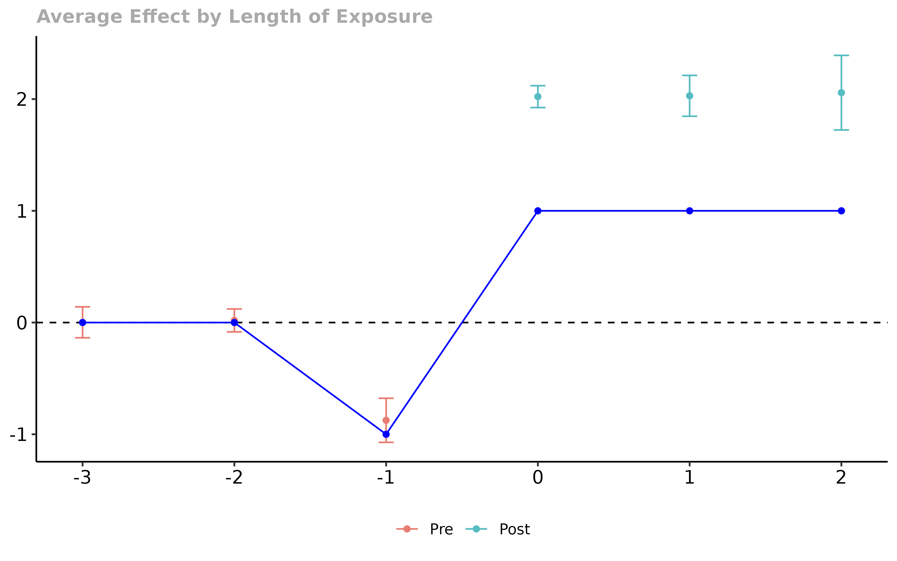

Writing Extensions to the did Package
Brantly Callaway and Pedro H.C. Sant’Anna
2023-08-29
Source:vignettes/extensions.Rmd
extensions.RmdIntroduction
This vignette provides an example of extending the ideas of the did package to some other cases.
We see the central idea of our approach to DiD to be for researchers to carefully make the comparisons that they want to make. It can be tricky to operationalize this though. And our code does not come close to covering all possible cases where one would like for identification to hold under some type of parallel trends assumption.
In this vignette, we demonstrate how to do difference in differences when individuals anticipate participating in the treatment and potentially adjust their behavior before they participate.
Although we now allow for treatment anticipation in the did package using the
anticipationargument, we still think that it is helpful to show a simplified version of the code behind the did package so that researchers can potentially borrow/modify it for one-off DiD applications that do not conform exactly to the expected setup in the did package. You will see that it’s not too complicated!For this vignette, there’s some math. The notation may be self-explanatory, but see our Introduction to DiD with Multiple Time Periods for precise explanations of the notation.
DiD with Anticipation
The example we give next is one where individuals anticipate participating in the treatment and adjust their behavior (or at least their outcomes change) before they actually participate in the treatment. This is a feature of some applications in economics – for example, in labor applications such as job training or job displacement, individual’s earnings often “dip” just before they actually participate in the treatment. One solution to this is to impose that parallel trends holds, but adjust the periods over which it holds. One version of this is to make the assumption that
Parallel Trends with Anticipation For all groups and time periods such that \(t \ge g-1\) \[ E[Y_t(0) - Y_{g-2}(0) | G=g] = E[Y_t(0) - Y_{g-2}(0) | C=1] \]
In other words, the path of outcomes, in the absence of participating in the treatment, between periods \((g-2)\) and \(t\) is the same for individuals in group \(g\) (which is not observed) as for untreated individuals (which is observed).
In this case, it is straightforward to show that, for all \(t \ge g-1\), \[ ATT(g,t) = E[Y_t - Y_{g-2} | G=g] - E[Y_t - Y_{g-2} | C=1] \]
This is very similar to the main case covered in the did package (see discussion in our Introduction to DiD with Multiple Time Periods vignette), except that the “base period” here is \((g-2)\) (two periods before individuals in group \(g\) become treated) rather than \((g-1)\) (one period before individuals in group \(g\) become treated) which is the setup used in the did package.
If you are worried that that units anticipate treatment participation two periods before treatment actually starts, you could address this by setting the base period to be \((g-3)\) instead. It is worth pointing out, however, that there is a tradeoff. Allowing for more periods of anticipation will require that the parallel trends assumption hold over more periods in order to identify the group-time average treatment effects. At any rate, for this vignette, we stick with the case where a researcher wants to allow anticipation exactly one period before units participate in the treatment.
Computing Treatment Effects under DiD with Anticipation
To start with, we want to point out that the important part for this vignette is not so much this particular application, but rather just to demonstrate how to write the code for this particular case.
The code below should be instructive for extending these sorts of ideas to other cases that may show up in applications.
We’ll write a simplified version of the code – it will not be as fast as the code in the did package, but it will demonstrate that it is relatively straightforward to write the code for modified versions of our approach. [BTW, the code below is not too slow either, basically things will run with a few thousand observations in a couple minutes rather than a couple seconds.]
To start with, we’ve constructed a dataset (called dta)
that has anticipation. All groups follow parallel trends (in the absence
of treatment) except in the period immediately before treatment (due to
treatment anticipation). In those periods, outcomes for individuals who
participate in the treatment “dip” – here, they decrease by 1 in the
pre-treatment period. In post-treatment periods, the effect of
participating in the treatment is equal to 1. This is simulated data,
but it has features that would be common in, for example, an application
evaluating the effect of a job training program.
Here is what the data looks like
nrow(dta)
#> [1] 35940
head(dta)
#> G X id period Y treat
#> 1 4 -0.9499532 1 1 4.152386 1
#> 8001 4 -0.9499532 1 2 3.675474 1
#> 16001 4 -0.9499532 1 3 1.502463 1
#> 24001 4 -0.9499532 1 4 2.588400 1
#> 32001 4 -0.9499532 1 5 1.538801 1
#> 2 3 -1.6527306 2 1 2.463654 1where G defines the period when an individual first
becomes treated, X is a covariate but we’ll ignore it
(parallel trends holds in this example without having to condition on
X), and Y is the outcome.
As a first step, we’ll try estimating the effect of participating in the treatment (focus on dynamic effects as in an event study plot) while just ignoring the possibility of anticipation.
# estimate group-time average treatment effects using att_gt method
# (and ignoring pre-treatment "dip")
attgt.ignoredip <- att_gt(yname = "Y",
tname = "period",
idname = "id",
gname = "G",
xformla = ~1,
data = dta,
)
# summarize the results
summary(attgt.ignoredip)
#>
#> Call:
#> att_gt(yname = "Y", tname = "period", idname = "id", gname = "G",
#> xformla = ~1, data = dta)
#>
#> Reference: Callaway, Brantly and Pedro H.C. Sant'Anna. "Difference-in-Differences with Multiple Time Periods." Journal of Econometrics, Vol. 225, No. 2, pp. 200-230, 2021. <https://doi.org/10.1016/j.jeconom.2020.12.001>, <https://arxiv.org/abs/1803.09015>
#>
#> Group-Time Average Treatment Effects:
#> Group Time ATT(g,t) Std. Error [95% Simult. Conf. Band]
#> 3 2 -0.9867 0.0950 -1.2611 -0.7123 *
#> 3 3 1.9663 0.0663 1.7747 2.1579 *
#> 3 4 1.9931 0.0915 1.7285 2.2577 *
#> 3 5 2.0575 0.1218 1.7055 2.4094 *
#> 4 2 0.0267 0.0541 -0.1297 0.1831
#> 4 3 -0.8470 0.1201 -1.1941 -0.4999 *
#> 4 4 1.9373 0.0635 1.7538 2.1208 *
#> 4 5 2.0648 0.0903 1.8040 2.3257 *
#> 5 2 0.0019 0.0586 -0.1673 0.1712
#> 5 3 0.0115 0.0583 -0.1570 0.1800
#> 5 4 -0.7937 0.1508 -1.2295 -0.3579 *
#> 5 5 2.1602 0.0676 1.9648 2.3555 *
#> ---
#> Signif. codes: `*' confidence band does not cover 0
#>
#> P-value for pre-test of parallel trends assumption: 0
#> Control Group: Never Treated, Anticipation Periods: 0
#> Estimation Method: Doubly Robust
# make dynamic effects plot
p <- ggdid(aggte(attgt.ignoredip, "dynamic"))
# add actual treatment effects to the plot
library(ggplot2)
truth <- cbind.data.frame(e = seq(-3,2), att.e = c(0,0,-1,1,1,1))
p <- p + geom_line(data = truth, aes(x = e, y = att.e), inherit.aes = FALSE, color = "blue")
p <- p + geom_point(data = truth, aes(x = e, y = att.e), inherit.aes = FALSE, color = "blue")
p
In the figure, the blue line is the “truth”. You can see that anticipation leads to two things. First, it leads to rejecting the parallel trends assumptions – you can correctly visualize the anticipation effects here and this is quite helpful for understanding what is going on. Second, however, the anticipation effects feed into the treatment effect estimates. Here, we over-estimate the effect of participating in the treatment due to the anticipation. Also, note that this example is really simple, and it would be easy to come up with cases where the results were much more complicated by anticipation.
Next we want to write our own code for getting around anticipation. A few notes:
The goal here is to write a simple version of the code – it’s possible to write faster code than what is given below, but there is a trade-off between code running fast and the amount of time spent writing it. If we were writing a one-off project that had anticipation, this is how we’d do it. The way we implemented this feature to the did package, on the other hand, is faster.
The code below is not (too much) optimized for
R. We have tried to write code that is easy to understand and (close to being) portable to another programming language without too much trouble.Code below computes an event-study-type estimator, but we could easily compute some other aggregation or look at group-time average treatment effects if that’s what we wanted.
Now to the code. We’ll start by writing a function to compute
group-time average treatment effects and dynamic effects given some
dataset (we’ll rely on the dataset having variables called
G, id, period, and
Y, but this would be easy to modify). Again, this function
is a simplified version of what’s going on behind the scenes in the
did package.
compute.attgt <- function(dta) {
# pick up all groups
groups <- unique(dta$G)
# pick up all time periods
time.periods <- unique(dta$period)
# sort the groups and drop the untreated group
groups <- sort(groups)[-1]
# sort the time periods and drop the first two
# (can't compute treatment effects for these two
# periods with one-period anticipation -- w/o anticipation
# we would just drop one period here)
time.periods <- sort(time.periods)[-c(1,2)]
# drop last time period (because we don't know if
# these units are affected by anticipation or not
# and we are being very careful)
# (if you were worried about more than one anticipation
# period here, would need to drop more time periods
# from the end)
time.periods <- time.periods[-length(time.periods)]
# list to store all group-time average treatment effects
# that we calculate
attgt.list <- list()
counter <- 1
# loop over all groups
for (g in groups) {
# get the correct "base" period for this group
# (subtract 2 to avoid anticipation)
main.base.period <- g - 2
# loop over all time periods
for (tp in time.periods) {
#----------------------------------------------------
# if it's a pre-treatment time period (used for the
# pre-test, we need to adjust the base period)
# group not treated yet
if (tp < g) {
# move two periods before
base.period <- tp - 2
} else {
# this is a post-treatment period
base.period <- main.base.period
}
#----------------------------------------------------
#----------------------------------------------------
# now, all we need to do is collect the right subset
# of the data and estimate a 2x2 DiD
# get group g and untreated group
this.data <- subset(dta, G==g | G==0)
# get current period and base period data
this.data <- subset(this.data, period==tp | period==base.period)
# set up to compute 2x2 estimator
Ypost <- subset(this.data, period==tp)$Y
Ypre <- subset(this.data, period==base.period)$Y
# dummy variable being in group g
G <- 1*(subset(this.data, period==tp)$G == g)
# compute 2x2 estimator using DRDID package
# (in this unconditional case, it would be straightforward
# to calculate the 2x2 att just using averages, but we
# like the DRDID package as it will work for more complicated
# cases as well)
attgt <- DRDID::reg_did_panel(Ypost, Ypre, G, covariates=NULL)$ATT
# save results
attgt.list[[counter]] <- list(att=attgt, group=g, time.period=tp)
counter <- counter+1
#----------------------------------------------------
}
}
#-----------------------------------------------------------------------------
# aggregate into dynamic effects
# turn results into a data.frame
attgt.results <- do.call("rbind.data.frame", attgt.list)
# add event time to the results
attgt.results$e <- attgt.results$time.period - attgt.results$group
# calculate relative sizes of each group
# (will be used as weights)
n.group <- sapply(groups, function(gg) nrow(subset(dta, G==gg)))
# merge in group sizes
ngroup.mat <- cbind(groups, n.group)
attgt.results <- merge(attgt.results, ngroup.mat, by.x = "group", by.y = "groups")
# event times to calculate dynamic effects
eseq <- unique(attgt.results$e)
eseq <- sort(eseq)
# calculate average effects by event time
att.e <- c()
counter <- 1
for (this.e in eseq) {
# get subset of results at this event time
res.e <- subset(attgt.results, e==this.e)
# calculate weights by group size
res.e$weight <- res.e$n.group / sum(res.e$n.group)
# calculate dynamic effect as weighted average
att.e[counter] <- sum(res.e$att * res.e$weight)
# on to the next one
counter <- counter+1
}
# store dynamic effects results
dyn.results <- cbind.data.frame(e = eseq, att.e = att.e)
# return group-time average treatment effects and dynamic effects
return(list(attgt.results=attgt.results[,c("group","att","time.period")],
dyn.results=dyn.results))
}Now, we have a function to compute group-time average treatment effects and dynamic effects. Let’s use it on the data that we have
anticipation.results <- compute.attgt(dta)
anticipation.results
#> $attgt.results
#> group att time.period
#> 1 3 0.97958850 3
#> 2 3 1.00638860 4
#> 3 4 -0.82029907 3
#> 4 4 1.09030729 4
#> 5 5 0.01348315 3
#> 6 5 -0.78216442 4
#>
#> $dyn.results
#> e att.e
#> 1 -2 0.01348315
#> 2 -1 -0.80112469
#> 3 0 1.03522713
#> 4 1 1.00638860Finally, let’s compute some standard errors using the nonparametric bootstrap (which is different and much slower than the multiplier bootstrap that we use in the did package); we’ll just focus on the dynamic effects estimator
# the number of bootstrap iterations
biters <- 100
# list to store bootstrap results
boot.res <- list()
# loop for each nonparametric bootstrap iteration
for (b in 1:biters) {
# draw a bootstrap sample; here, we'll call an outside function
bdata <- BMisc::blockBootSample(dta, "id")
# call our function for estimating dynamic effects on the
# bootstrapped data
boot.res[[b]] <- compute.attgt(bdata)$dyn.results$att.e
}
# use the bootstrapped results to compute standard errors
boot.res <- t(simplify2array(boot.res))
boot.se <- apply(boot.res, 2, sd)
# add the standard errors to the main results
dyn.results <- anticipation.results$dyn.results
dyn.results$att.se <- boot.seFinally, we can translate these into a plot. [One last thing here, to keep things very simple, we are going to plot pointwise confidence intervals, but we strongly suggest computing simultaneous confidence bands in practice.]
p <- ggplot(data=dyn.results, aes(x=e, y=att.e)) +
geom_line() +
geom_point() +
geom_errorbar(aes(ymin=(att.e-1.96*att.se), ymax=(att.e+1.96*att.se)), width=0.1) +
theme_bw()
p <- p + geom_line(data=truth, aes(x=e, y=att.e), inherit.aes=FALSE, color="blue")
p <- p + geom_point(data=truth, aes(x=e, y=att.e), inherit.aes=FALSE, color="blue")
p
Here, the black line is our estimate and the blue line is the “truth”. You can immediately see that we get things right here when we account for anticipation. The only other thing to notice is that we do not estimate dynamic effects at as many different lengths of exposure, but that is the price to pay for accounting for anticipation.
Conclusion
In this vignette, we illustrated how one could apply the principles in the did package to the case where units anticipate participating in the treatment. This is a relatively straightforward exercise, and we think that showing this sort of extension is potentially useful for other situations that do not fit exactly into the cases covered by the did package.